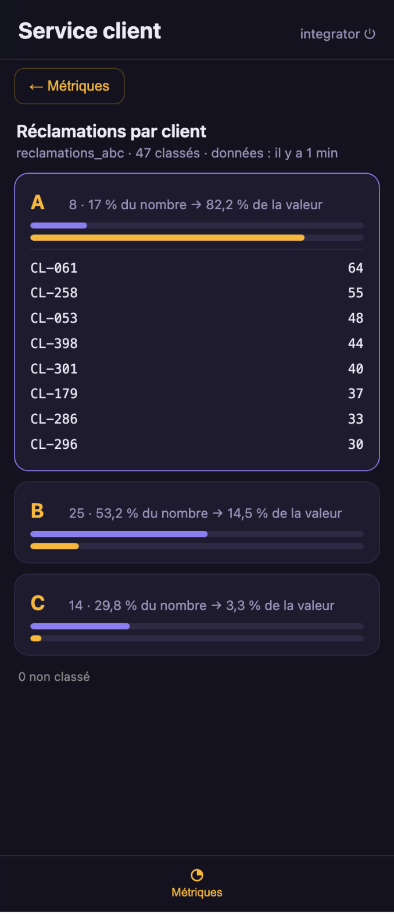
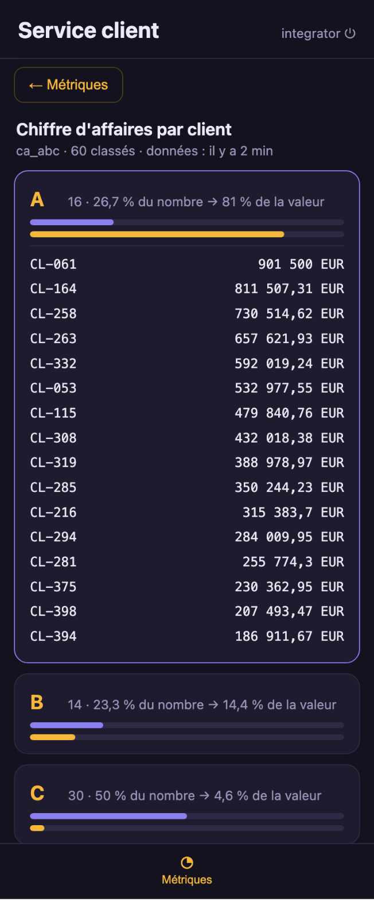

Legacy helpdesk and ERP: three of the eight customers who complain most weigh 0.41 % of revenue
Goal See whether the customers who concentrate complaints are those who concentrate revenue.
A distributor exports its tickets from the helpdesk and its invoices from the ERP. Everybody believes complaints follow revenue. The two have never been set side by side.
- two metrics, one per export, classed A, B, C by customer
- both cards in the same Metrics tab
- the comparison made by the reader, not by lumnik
ticket;client;date;motif T-00001;CL-061;2026-01-01;délai T-00002;CL-053;2026-01-06;délai T-00003;CL-061;2026-01-08;SAV T-00004;CL-375;2026-01-08;SAV T-00005;CL-394;2026-01-08;délai T-00006;CL-296;2026-01-09;facturation T-00007;CL-286;2026-01-10;SAV T-00008;CL-053;2026-01-11;délai T-00009;CL-179;2026-01-11;facturation T-00010;CL-285;2026-01-11;facturation T-00011;CL-258;2026-01-12;délai T-00012;CL-053;2026-01-13;facturation T-00013;CL-061;2026-01-15;délai T-00014;CL-398;2026-01-16;qualité produit T-00015;CL-053;2026-01-18;SAV T-00016;CL-301;2026-01-18;qualité produit T-00017;CL-286;2026-01-19;livraison T-00018;CL-053;2026-01-20;délai T-00019;CL-301;2026-01-20;qualité produit
… 408 more lines
facture;client;mois;montant_ht F26-00001;CL-061;2026-01;90150,00 F26-00002;CL-061;2026-02;90150,00 F26-00003;CL-061;2026-03;90150,00 F26-00004;CL-061;2026-04;90150,00 F26-00005;CL-061;2026-05;90150,00 F26-00006;CL-061;2026-06;90150,00 F26-00007;CL-061;2026-07;90150,00 F26-00008;CL-061;2026-08;90150,00 F26-00009;CL-061;2026-09;90150,00 F26-00010;CL-061;2026-10;90150,00 F26-00011;CL-164;2026-01;81150,74 F26-00012;CL-164;2026-02;81150,73 F26-00013;CL-164;2026-03;81150,73 F26-00014;CL-164;2026-04;81150,73 F26-00015;CL-164;2026-05;81150,73 F26-00016;CL-164;2026-06;81150,73 F26-00017;CL-164;2026-07;81150,73 F26-00018;CL-164;2026-08;81150,73 F26-00019;CL-164;2026-09;81150,73
… 581 more lines
apiVersion: connectors.lumnik.io/v1kind: Connectormetadata: name: scenario-sav-tickets-a connector_type: csv-file scopes: [sav-a]spec: transport: kind: sftp host: host.docker.internal port: 2235 user: sav path: /exports/tickets.csv password_env: SCENARIO_SAV_A_SFTP # The fingerprint the export server presents, read out of band (ssh-keyscan | ssh-keygen -lf -). host_key_fingerprint: "SHA256:FINGERPRINT_READ_AT_REPLAY" parser: has_header: true delimiter: ";" encoding: UTF-8 after_process: noneapiVersion: connectors.lumnik.io/v1kind: Connectormetadata: name: scenario-sav-factures-a connector_type: csv-file scopes: [sav-a]spec: transport: kind: sftp host: host.docker.internal port: 2235 user: sav path: /exports/factures.csv password_env: SCENARIO_SAV_A_SFTP # The fingerprint the export server presents, read out of band (ssh-keyscan | ssh-keygen -lf -). host_key_fingerprint: "SHA256:FINGERPRINT_READ_AT_REPLAY" parser: has_header: true delimiter: ";" encoding: UTF-8 after_process: none mapping: cell: - parse-number: { column: montant_ht, decimal-separator: "," } # the ERP writes 90150,00kind: Entityname: ScenarioSavTicketsAmatch: [ticket]scopes: [sav-a]sources: - table: t_scenario_sav_tickets_a map: ticket: ticket client: client date: date motif: motifkind: Entityname: ScenarioSavFacturesAmatch: [facture]scopes: [sav-a]sources: - table: t_scenario_sav_factures_a map: facture: facture client: client mois: mois montant_ht: montant_htapiVersion: apps.lumnik.io/v1kind: Metricmetadata: name: scenario_sav_reclamations_aspec: scope: sav-a title: Réclamations par client description: Les clients classés A, B, C par nombre de réclamations, janvier à octobre 2026. source: entity: ScenarioSavTicketsA by: [client] measures: reclamations: { count: rows } across: reclamations_abc: { preset: abc, of: reclamations }apiVersion: apps.lumnik.io/v1kind: Metricmetadata: name: scenario_sav_ca_aspec: scope: sav-a title: Chiffre d'affaires par client description: Les clients classés A, B, C par chiffre d'affaires HT, janvier à octobre 2026. source: entity: ScenarioSavFacturesA by: [client] measures: ca: { sum: montant_ht, unit: EUR } across: ca_abc: { preset: abc, of: ca }$ lm apply -f 10-helpdesk.yaml
Applied connector "scenario-sav-tickets-s1127" — 1 endpoint
$ lm apply -f 11-erp.yaml
Applied connector "scenario-sav-factures-s1127" — 1 endpoint
$ lm connector run scenario-sav-tickets-s1127
run scheduled: 6a48515f-e0c5-4dfd-9c60-4fcebeecc519
$ lm run get 6a48515f-e0c5-4dfd-9c60-4fcebeecc519 --wait-evaluated
ID CONNECTOR ENDPOINT STATUS IN OUT SKIPPED DEAD-LETTERS STARTED ENDED EVALUATED
6a48515f scenario-sav-tickets-s1127 default Completed 427 427 0 0 2026-11-27 22:44 2026-11-27 22:44 yes
$ lm connector run scenario-sav-factures-s1127
run scheduled: 7f4bdfbb-9f44-41cb-a24b-edfde05d43dd
$ lm run get 7f4bdfbb-9f44-41cb-a24b-edfde05d43dd --wait-evaluated
ID CONNECTOR ENDPOINT STATUS IN OUT SKIPPED DEAD-LETTERS STARTED ENDED EVALUATED
7f4bdfbb scenario-sav-factures-s1127 default Completed 600 600 0 0 2026-11-27 22:44 2026-11-27 22:44 yes
$ lm entity apply -f 20-ticket.yaml
Applied entity "ScenarioSavTicketsS1127" → connector."v_scenariosavticketss1127"
$ lm entity apply -f 21-facture.yaml
Applied entity "ScenarioSavFacturesS1127" → connector."v_scenariosavfacturess1127"
$ lm metric apply -f 30-reclamations.yaml
Applied metric "scenario_sav_reclamations_s1127" (definition version 1)
$ lm metric apply -f 31-ca.yaml
Applied metric "scenario_sav_ca_s1127" (definition version 1)- run tickets
- IN 427 · OUT 427 · cell errors 0
- run factures
- IN 600 · OUT 600 · cell errors 0
evidence: replay.log, 00-check-classes.txt, 01-run-tickets.json, 01-run-factures.json, 04-reclamations.txt, 05-ca.txt, 06-compare.json · transform v1
$ lm metric get scenario_sav_reclamations_s1127
Réclamations par client
CLIENT RECLAMATIONS RECLAMATIONS_ABC RECLAMATIONS_ABC_BEFORE RECLAMATIONS_ABC_COUNT RECLAMATIONS_ABC_COUNT_SHARE RECLAMATIONS_ABC_SHARE RECLAMATIONS_ABC_POPULATION RECLAMATIONS_ABC_UNCLASSIFIED _DISPUTED
CL-002 2 B 90.6323185011709602 25 53.1914893617021277 14.5199063231850117 47 0 0
CL-006 3 B 82.2014051522248244 25 53.1914893617021277 14.5199063231850117 47 0 0
CL-013 1 C 96.7213114754098361 14 29.7872340425531915 3.2786885245901639 47 0 0
CL-040 3 B 82.2014051522248244 25 53.1914893617021277 14.5199063231850117 47 0 0
CL-051 1 C 96.7213114754098361 14 29.7872340425531915 3.2786885245901639 47 0 0
CL-053 48 A 27.8688524590163934 8 17.0212765957446809 82.2014051522248244 47 0 0
CL-057 3 B 82.2014051522248244 25 53.1914893617021277 14.5199063231850117 47 0 0
CL-061 64 A 0 8 17.0212765957446809 82.2014051522248244 47 0 0
CL-073 3 B 82.2014051522248244 25 53.1914893617021277 14.5199063231850117 47 0 0
CL-108 3 B 82.2014051522248244 25 53.1914893617021277 14.5199063231850117 47 0 0
CL-115 2 B 90.6323185011709602 25 53.1914893617021277 14.5199063231850117 47 0 0
CL-123 3 B 82.2014051522248244 25 53.1914893617021277 14.5199063231850117 47 0 0
CL-129 1 C 96.7213114754098361 14 29.7872340425531915 3.2786885245901639 47 0 0
CL-148 2 B 90.6323185011709602 25 53.1914893617021277 14.5199063231850117 47 0 0
CL-150 1 C 96.7213114754098361 14 29.7872340425531915 3.2786885245901639 47 0 0
CL-159 2 B 90.6323185011709602 25 53.1914893617021277 14.5199063231850117 47 0 0
CL-164 3 B 82.2014051522248244 25 53.1914893617021277 14.5199063231850117 47 0 0
CL-175 1 C 96.7213114754098361 14 29.7872340425531915 3.2786885245901639 47 0 0
CL-179 37 A 58.7822014051522248 8 17.0212765957446809 82.2014051522248244 47 0 0
CL-183 3 B 82.2014051522248244 25 53.1914893617021277 14.5199063231850117 47 0 0
CL-187 2 B 90.6323185011709602 25 53.1914893617021277 14.5199063231850117 47 0 0
CL-189 3 B 82.2014051522248244 25 53.1914893617021277 14.5199063231850117 47 0 0
CL-193 2 B 90.6323185011709602 25 53.1914893617021277 14.5199063231850117 47 0 0
CL-204 2 B 90.6323185011709602 25 53.1914893617021277 14.5199063231850117 47 0 0
CL-216 2 B 90.6323185011709602 25 53.1914893617021277 14.5199063231850117 47 0 0
CL-237 1 C 96.7213114754098361 14 29.7872340425531915 3.2786885245901639 47 0 0
CL-258 55 A 14.9882903981264637 8 17.0212765957446809 82.2014051522248244 47 0 0
CL-263 1 C 96.7213114754098361 14 29.7872340425531915 3.2786885245901639 47 0 0
CL-276 2 B 90.6323185011709602 25 53.1914893617021277 14.5199063231850117 47 0 0
CL-285 3 B 82.2014051522248244 25 53.1914893617021277 14.5199063231850117 47 0 0
CL-286 33 A 67.4473067915690867 8 17.0212765957446809 82.2014051522248244 47 0 0
CL-294 1 C 96.7213114754098361 14 29.7872340425531915 3.2786885245901639 47 0 0
CL-296 30 A 75.1756440281030445 8 17.0212765957446809 82.2014051522248244 47 0 0
CL-301 40 A 49.4145199063231850 8 17.0212765957446809 82.2014051522248244 47 0 0
CL-308 1 C 96.7213114754098361 14 29.7872340425531915 3.2786885245901639 47 0 0
CL-315 1 C 96.7213114754098361 14 29.7872340425531915 3.2786885245901639 47 0 0
CL-331 2 B 90.6323185011709602 25 53.1914893617021277 14.5199063231850117 47 0 0
CL-348 1 C 96.7213114754098361 14 29.7872340425531915 3.2786885245901639 47 0 0
CL-351 2 B 90.6323185011709602 25 53.1914893617021277 14.5199063231850117 47 0 0
CL-361 1 C 96.7213114754098361 14 29.7872340425531915 3.2786885245901639 47 0 0
CL-371 2 B 90.6323185011709602 25 53.1914893617021277 14.5199063231850117 47 0 0
CL-375 3 B 82.2014051522248244 25 53.1914893617021277 14.5199063231850117 47 0 0
CL-382 1 C 96.7213114754098361 14 29.7872340425531915 3.2786885245901639 47 0 0
CL-385 3 B 82.2014051522248244 25 53.1914893617021277 14.5199063231850117 47 0 0
CL-394 1 C 96.7213114754098361 14 29.7872340425531915 3.2786885245901639 47 0 0
CL-396 2 B 90.6323185011709602 25 53.1914893617021277 14.5199063231850117 47 0 0
CL-398 44 A 39.1100702576112412 8 17.0212765957446809 82.2014051522248244 47 0 0
reclamations_abc_before: %
reclamations_abc_count_share: %
reclamations_abc_share: %
reclamations = count(rows), by client
reclamations_abc = pareto(reclamations, bounds [80, 95], labels [A, B, C]) over every group, prior mass, null and ≤ 0 unclassified
data as of: 2026-11-27T21:44:25.125304Z (last completed run)
$ lm metric get scenario_sav_ca_s1127
Chiffre d'affaires par client
CLIENT CA CA_ABC CA_ABC_BEFORE CA_ABC_COUNT CA_ABC_COUNT_SHARE CA_ABC_SHARE CA_ABC_POPULATION CA_ABC_UNCLASSIFIED _DISPUTED
CL-002 90290.20 B 89.6732143176740310 14 23.3333333333333333 14.4110727205166680 60 0 0
CL-006 44103.15 B 94.8913689433219572 14 23.3333333333333333 14.4110727205166680 60 0 0
CL-013 4640.98 C 99.7711008416778124 30 50.0000000000000000 4.6232751897734930 60 0 0
CL-040 13772.23 C 98.4703405373741119 30 50.0000000000000000 4.6232751897734930 60 0 0
CL-042 73465.24 B 91.5630481416148248 14 23.3333333333333333 14.4110727205166680 60 0 0
CL-046 10549.60 C 98.8870628522792941 30 50.0000000000000000 4.6232751897734930 60 0 0
CL-051 54032.13 B 93.7596340178956151 14 23.3333333333333333 14.4110727205166680 60 0 0
CL-053 532977.55 A 40.6433186296306371 16 26.6666666666666667 80.9656520897098390 60 0 0
CL-057 66293.57 B 92.3715342757696597 14 23.3333333333333333 14.4110727205166680 60 0 0
CL-061 901500 A 0 16 26.6666666666666667 80.9656520897098390 60 0 0
CL-073 7011.97 C 99.3814432724208895 30 50.0000000000000000 4.6232751897734930 60 0 0
CL-108 29554.07 C 96.5715598556085128 30 50.0000000000000000 4.6232751897734930 60 0 0
CL-115 479840.76 A 46.5087450406900063 16 26.6666666666666667 80.9656520897098390 60 0 0
CL-123 100130.60 B 88.5712754727916879 14 23.3333333333333333 14.4110727205166680 60 0 0
CL-129 24284.25 C 97.1915182920625593 30 50.0000000000000000 4.6232751897734930 60 0 0
CL-148 59839.80 B 93.1010960675588506 14 23.3333333333333333 14.4110727205166680 60 0 0
CL-150 8206.26 C 99.2077449436928967 30 50.0000000000000000 4.6232751897734930 60 0 0
CL-159 4937.99 C 99.7167581832233483 30 50.0000000000000000 4.6232751897734930 60 0 0
CL-161 32637.07 C 96.2123883813923973 30 50.0000000000000000 4.6232751897734930 60 0 0
CL-164 811507.31 A 9.9210218321015986 16 26.6666666666666667 80.9656520897098390 60 0 0
CL-175 11512.07 C 98.7603723389097080 30 50.0000000000000000 4.6232751897734930 60 0 0
CL-179 22038.72 C 97.4587668493850366 30 50.0000000000000000 4.6232751897734930 60 0 0
CL-183 20018.47 C 97.7013033133579419 30 50.0000000000000000 4.6232751897734930 60 0 0
CL-187 3920.66 C 99.9158230735963707 30 50.0000000000000000 4.6232751897734930 60 0 0
CL-189 4135.20 C 99.8703151318547106 30 50.0000000000000000 4.6232751897734930 60 0 0
CL-193 18200.98 C 97.9216068939627904 30 50.0000000000000000 4.6232751897734930 60 0 0
CL-204 26780.10 C 96.8968028658109076 30 50.0000000000000000 4.6232751897734930 60 0 0
CL-216 315383.70 A 64.6789324413970440 16 26.6666666666666667 80.9656520897098390 60 0 0
CL-226 111065.19 B 87.3490012911205707 14 23.3333333333333333 14.4110727205166680 60 0 0
CL-231 48805.97 B 94.3542584675516903 14 23.3333333333333333 14.4110727205166680 60 0 0
CL-235 7577.30 C 99.2980549654565152 30 50.0000000000000000 4.6232751897734930 60 0 0
CL-237 3728.30 C 99.9589699992272608 30 50.0000000000000000 4.6232751897734930 60 0 0
CL-252 168388.78 B 80.9656520897098390 14 23.3333333333333333 14.4110727205166680 60 0 0
CL-258 730514.62 A 18.8516726800439612 16 26.6666666666666667 80.9656520897098390 60 0 0
CL-263 657621.93 A 26.8909976869096330 16 26.6666666666666667 80.9656520897098390 60 0 0
CL-276 8905.91 C 99.1097352625562001 30 50.0000000000000000 4.6232751897734930 60 0 0
CL-281 255774.30 A 71.2752690888435935 16 26.6666666666666667 80.9656520897098390 60 0 0
CL-285 350244.23 A 60.8244891220430632 16 26.6666666666666667 80.9656520897098390 60 0 0
CL-286 9684.12 C 99.0031613679974739 30 50.0000000000000000 4.6232751897734930 60 0 0
CL-294 284009.95 A 68.1497350738862076 16 26.6666666666666667 80.9656520897098390 60 0 0
CL-296 5268.82 C 99.6587747353593288 30 50.0000000000000000 4.6232751897734930 60 0 0
CL-301 123215.54 B 85.9930123145324533 14 23.3333333333333333 14.4110727205166680 60 0 0
CL-308 432018.38 A 51.7894002330274699 16 26.6666666666666667 80.9656520897098390 60 0 0
CL-315 81434.57 B 90.6668594041130989 14 23.3333333333333333 14.4110727205166680 60 0 0
CL-319 388978.97 A 56.5437693731818400 16 26.6666666666666667 80.9656520897098390 60 0 0
CL-327 15095.19 C 98.3042177314398671 30 50.0000000000000000 4.6232751897734930 60 0 0
CL-331 6503.90 C 99.4586101137476132 30 50.0000000000000000 4.6232751897734930 60 0 0
CL-332 592019.24 A 34.1281374814729044 16 26.6666666666666667 80.9656520897098390 60 0 0
CL-348 36063.45 C 95.8155095408034851 30 50.0000000000000000 4.6232751897734930 60 0 0
CL-351 39871.34 C 95.3767248102265070 30 50.0000000000000000 4.6232751897734930 60 0 0
CL-361 6047.37 C 99.5301856366470093 30 50.0000000000000000 4.6232751897734930 60 0 0
CL-364 4374.39 C 99.8221749003603935 30 50.0000000000000000 4.6232751897734930 60 0 0
CL-367 5637.22 C 99.5967370396384638 30 50.0000000000000000 4.6232751897734930 60 0 0
CL-371 12582.28 C 98.6219041474758586 30 50.0000000000000000 4.6232751897734930 60 0 0
CL-375 230362.95 A 74.0900693266589056 16 26.6666666666666667 80.9656520897098390 60 0 0
CL-382 16565.97 C 98.1219089682230727 30 50.0000000000000000 4.6232751897734930 60 0 0
CL-385 151718.91 B 82.8187732906648618 14 23.3333333333333333 14.4110727205166680 60 0 0
CL-394 186911.67 A 78.9086861898267892 16 26.6666666666666667 80.9656520897098390 60 0 0
CL-396 136716.75 B 84.4884423072512817 14 23.3333333333333333 14.4110727205166680 60 0 0
CL-398 207493.47 A 76.6252172537330365 16 26.6666666666666667 80.9656520897098390 60 0 0
ca: EUR
ca_abc_before: %
ca_abc_count_share: %
ca_abc_share: %
ca = sum(montant_ht), by client
ca_abc = pareto(ca, bounds [80, 95], labels [A, B, C]) over every group, prior mass, null and ≤ 0 unclassified
data as of: 2026-11-27T21:44:26.975443Z (last completed run)- complaints · A
- 8 customers · 82.20 %
- revenue · A
- 16 customers · 80.97 %
- check_classes.py
- both classes A identical
evidence: replay.log, 00-check-classes.txt, 01-run-tickets.json, 01-run-factures.json, 04-reclamations.txt, 05-ca.txt, 06-compare.json · transform v1


- CL-061
- 64 complaints · revenue A
- CL-258
- 55 complaints · revenue A
- CL-053
- 48 complaints · revenue A
- CL-398
- 44 complaints · revenue A
- CL-301
- 40 complaints · revenue B
- CL-179
- 37 complaints · revenue C
- CL-286
- 33 complaints · revenue C
- CL-296
- 30 complaints · revenue C
- check_classes.py
- same comparison
evidence: replay.log, 00-check-classes.txt, 01-run-tickets.json, 01-run-factures.json, 04-reclamations.txt, 05-ca.txt, 06-compare.json · transform v1
Limits
- lumnik does not cross the two classes: a customer's complaint class and revenue class on one line wait for `against`.
- No rule of thumb: nothing says "20 % make 80 %", each card shows what it observes.
- No rate: complaints are counted, not divided by orders or revenue.
- A customer with no ticket is absent from the complaints' metric: 47 customers on one side, 60 on the other.
- No cause, no trend: ten months as one total.
- Sixty customer codes, synthetic.
This scenario runs on lumnik Open, free and open source.
Try lumnik Open →